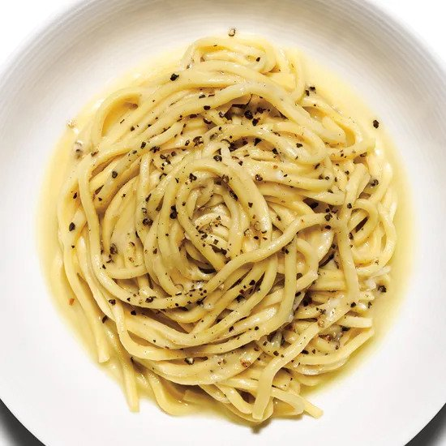

Cacio e Pepe

Homepage
Description
Cacio e pepe has its roots in Lazio, Italy. The name cacio e pepe literally means "cheese and pepper"
which gives insight to the dish's simple ingredients. Both ingredients actually have long shelf lives providing
shephards, without permanent residency, a practical meal.
Interestingly, this dish's minimalism is its greatest potential; cacio e pepe serves as the quintessential pasta dish,
add cured pork jowl, or guanciale, and the dish becomes pasta alla gricia; you can then add an emulsified egg sauce and you
have carbonara. Alternatively, instead of eggs, you add tomatoes and you'll get amatriciana. This dish's
versatility lies in its basic ingredients. Finally, regarding this recipe, it is portioned for 2 servings.
Ingredients
- Kosher salt
- 6 oz. pasta (such as egg tagliolini, bucatini, or spaghetti)
- 3 Tbsp. unsalted butter, cubed, divided
- 1 tsp. freshly cracked black pepper
- ¾ cup finely grated Grana Padano or Parmesan
- ⅓ cup finely grated Pecorino
Steps
- Bring 3 quarts water to a boil, season with salt, and add the pasta. Stir occasionally until pasta is cooked to your preference. Drain, reserving ¾ cup pasta cooking water.
- Meanwhile, melt 2 Tbsp. butter in a large pot or skillet over medium heat. Swirl the butter then add pepper and cook for about a minute.
- Add ½ cup reserved pasta water to skillet and bring to a simmer. Then, add pasta and remaining butter, reduce the heat to low and add Grana Padano, stirring and tossing until the cheese melts.
- Remove pan from heat; add Pecorino, stirring and tossing until the cheese melts and the sauce coats the pasta. (Add more pasta water if sauce seems dry.) Transfer pasta to bowls or plates and serve.